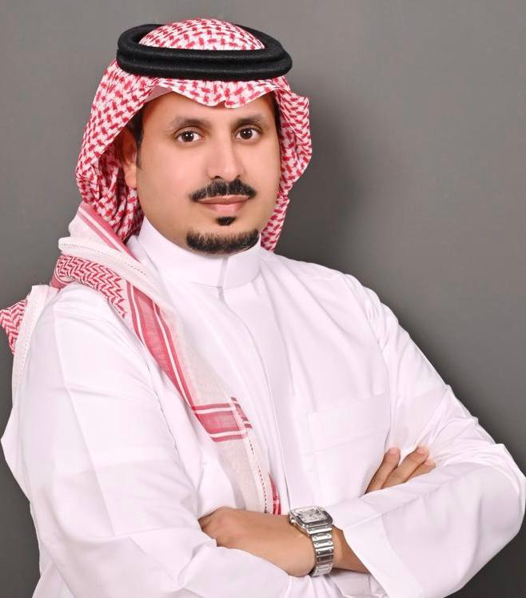

About the Founder

Mofarreh Abdullah Saeed Al Shehri is a seasoned financial advisor and real estate investment consultant with nearly 20 years of experience in the Saudi market. He is the founder of Wealth Growth, a boutique advisory firm focused on delivering strategic financial and real estate solutions tailored to institutional investors, family offices, and high-net-worth individuals.
Mofarreh has led major advisory mandates for public and private entities, including the Riyadh Chamber of Commerce, and has been instrumental in shaping investment frameworks, exit strategies, and asset selection processes.
He brings a unique blend of practical insight, disciplined strategy, and local market expertise — enabling clients to navigate complex financial decisions with clarity and confidence.